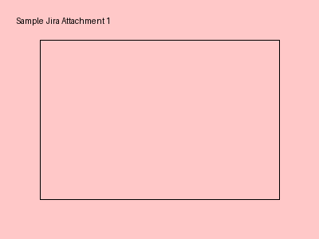

Implement Jira integration for code analyzer
Created: 2023-05-15T10:30:00.000+0000
Updated: 2023-05-16T14:45:00.000+0000
As a user, I want to see my relevant Jira stories in the code analysis report so that I can track issues related to my codebase.
**Acceptance Criteria:**
- Fetch stories from Jira API
- Display summary, status, and description
- Show comments and attachments
- Integrate with existing report
Comments
Attachments
sample_attachment_1.png (2452 bytes)

Fix broken CSS in report generation
Created: 2023-05-17T09:15:00.000+0000
Updated: 2023-05-17T09:15:00.000+0000
The CSS styles in the generated report are not being applied correctly. The Jira stories section is not displaying images properly.
**Steps to reproduce:**
1. Generate a report with Jira stories
2. Open the HTML report
3. Notice the images are not displayed
Set up project structure and dependencies
Created: 2023-05-10T08:00:00.000+0000
Updated: 2023-05-12T16:30:00.000+0000
Create the initial project structure with requirements.txt, main.py, and necessary modules.
Comments
I've started working on this. Initial API connection is working.